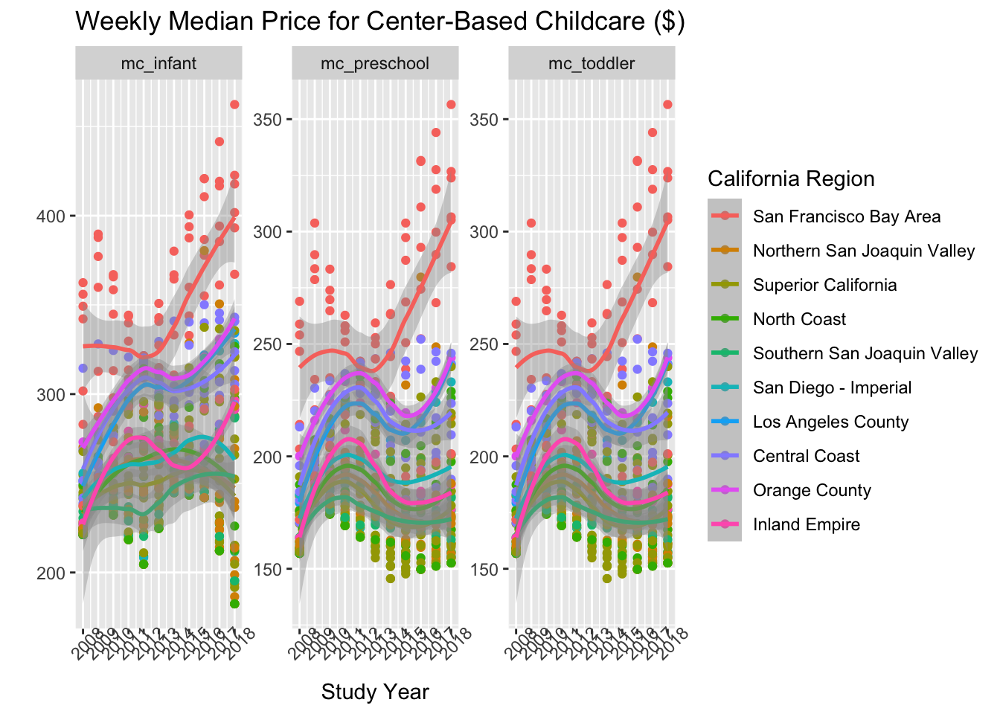
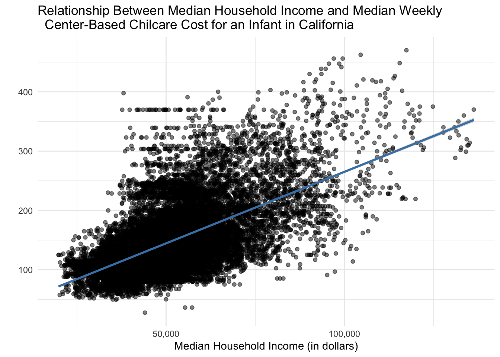

Code
library(tidyverse)In this lab we’re going look at the median weekly cost of childcare in California. A detailed description of the data can be found here.
The data come to us from TidyTuesday.
0. Load the appropriate libraries and the data.
library(tidyverse)childcare_costs <- read_csv('https://raw.githubusercontent.com/rfordatascience/tidytuesday/master/data/2023/2023-05-09/childcare_costs.csv')
counties <- read_csv('https://raw.githubusercontent.com/rfordatascience/tidytuesday/master/data/2023/2023-05-09/counties.csv')
glimpse(childcare_costs)Rows: 34,567
Columns: 61
$ county_fips_code <dbl> 1001, 1001, 1001, 1001, 1001, 1001, 1001, 10…
$ study_year <dbl> 2008, 2009, 2010, 2011, 2012, 2013, 2014, 20…
$ unr_16 <dbl> 5.42, 5.93, 6.21, 7.55, 8.60, 9.39, 8.50, 7.…
$ funr_16 <dbl> 4.41, 5.72, 5.57, 8.13, 8.88, 10.31, 9.18, 8…
$ munr_16 <dbl> 6.32, 6.11, 6.78, 7.03, 8.29, 8.56, 7.95, 6.…
$ unr_20to64 <dbl> 4.6, 4.8, 5.1, 6.2, 6.7, 7.3, 6.8, 5.9, 4.4,…
$ funr_20to64 <dbl> 3.5, 4.6, 4.6, 6.3, 6.4, 7.6, 6.8, 6.1, 4.6,…
$ munr_20to64 <dbl> 5.6, 5.0, 5.6, 6.1, 7.0, 7.0, 6.8, 5.9, 4.3,…
$ flfpr_20to64 <dbl> 68.9, 70.8, 71.3, 70.2, 70.6, 70.7, 69.9, 68…
$ flfpr_20to64_under6 <dbl> 66.9, 63.7, 67.0, 66.5, 67.1, 67.5, 65.2, 66…
$ flfpr_20to64_6to17 <dbl> 79.59, 78.41, 78.15, 77.62, 76.31, 75.91, 75…
$ flfpr_20to64_under6_6to17 <dbl> 60.81, 59.91, 59.71, 59.31, 58.30, 58.00, 57…
$ mlfpr_20to64 <dbl> 84.0, 86.2, 85.8, 85.7, 85.7, 85.0, 84.2, 82…
$ pr_f <dbl> 8.5, 7.5, 7.5, 7.4, 7.4, 8.3, 9.1, 9.3, 9.4,…
$ pr_p <dbl> 11.5, 10.3, 10.6, 10.9, 11.6, 12.1, 12.8, 12…
$ mhi_2018 <dbl> 58462.55, 60211.71, 61775.80, 60366.88, 5915…
$ me_2018 <dbl> 32710.60, 34688.16, 34740.84, 34564.32, 3432…
$ fme_2018 <dbl> 25156.25, 26852.67, 27391.08, 26727.68, 2796…
$ mme_2018 <dbl> 41436.80, 43865.64, 46155.24, 45333.12, 4427…
$ total_pop <dbl> 49744, 49584, 53155, 53944, 54590, 54907, 55…
$ one_race <dbl> 98.1, 98.6, 98.5, 98.5, 98.5, 98.6, 98.7, 98…
$ one_race_w <dbl> 78.9, 79.1, 79.1, 78.9, 78.9, 78.3, 78.0, 77…
$ one_race_b <dbl> 17.7, 17.9, 17.9, 18.1, 18.1, 18.4, 18.6, 18…
$ one_race_i <dbl> 0.4, 0.4, 0.3, 0.2, 0.3, 0.3, 0.4, 0.4, 0.4,…
$ one_race_a <dbl> 0.4, 0.6, 0.7, 0.7, 0.8, 1.0, 0.9, 1.0, 0.8,…
$ one_race_h <dbl> 0.0, 0.0, 0.0, 0.0, 0.0, 0.0, 0.0, 0.0, 0.1,…
$ one_race_other <dbl> 0.7, 0.7, 0.6, 0.5, 0.4, 0.7, 0.7, 0.9, 1.4,…
$ two_races <dbl> 1.9, 1.4, 1.5, 1.5, 1.5, 1.4, 1.3, 1.6, 2.0,…
$ hispanic <dbl> 1.8, 2.0, 2.3, 2.4, 2.4, 2.5, 2.5, 2.6, 2.6,…
$ households <dbl> 18373, 18288, 19718, 19998, 19934, 20071, 20…
$ h_under6_both_work <dbl> 1543, 1475, 1569, 1695, 1714, 1532, 1557, 13…
$ h_under6_f_work <dbl> 970, 964, 1009, 1060, 938, 880, 1191, 1258, …
$ h_under6_m_work <dbl> 22, 16, 16, 106, 120, 161, 159, 211, 109, 10…
$ h_under6_single_m <dbl> 995, 1099, 1110, 1030, 1095, 1160, 954, 883,…
$ h_6to17_both_work <dbl> 4900, 5028, 5472, 5065, 4608, 4238, 4056, 40…
$ h_6to17_fwork <dbl> 1308, 1519, 1541, 1965, 1963, 1978, 2073, 20…
$ h_6to17_mwork <dbl> 114, 92, 113, 246, 284, 354, 373, 551, 322, …
$ h_6to17_single_m <dbl> 1966, 2305, 2377, 2299, 2644, 2522, 2269, 21…
$ emp_m <dbl> 27.40, 29.54, 29.33, 31.17, 32.13, 31.74, 32…
$ memp_m <dbl> 24.41, 26.07, 25.94, 26.97, 28.59, 27.44, 28…
$ femp_m <dbl> 30.68, 33.40, 33.06, 35.96, 36.09, 36.61, 37…
$ emp_service <dbl> 17.06, 15.81, 16.92, 16.18, 16.09, 16.72, 16…
$ memp_service <dbl> 15.53, 14.16, 15.09, 14.21, 14.71, 13.92, 13…
$ femp_service <dbl> 18.75, 17.64, 18.93, 18.42, 17.63, 19.89, 20…
$ emp_sales <dbl> 29.11, 28.75, 29.07, 27.56, 28.39, 27.22, 25…
$ memp_sales <dbl> 15.97, 17.51, 17.82, 17.74, 17.79, 17.38, 15…
$ femp_sales <dbl> 43.52, 41.25, 41.43, 38.76, 40.26, 38.36, 36…
$ emp_n <dbl> 13.21, 11.89, 11.57, 10.72, 9.02, 9.27, 9.38…
$ memp_n <dbl> 22.54, 20.30, 19.86, 18.28, 16.03, 16.79, 17…
$ femp_n <dbl> 2.99, 2.52, 2.45, 2.09, 1.19, 0.77, 0.58, 0.…
$ emp_p <dbl> 13.22, 14.02, 13.11, 14.38, 14.37, 15.04, 16…
$ memp_p <dbl> 21.55, 21.96, 21.28, 22.80, 22.88, 24.48, 24…
$ femp_p <dbl> 4.07, 5.19, 4.13, 4.77, 4.84, 4.36, 6.07, 7.…
$ mcsa <dbl> 80.92, 83.42, 85.92, 88.43, 90.93, 93.43, 95…
$ mfccsa <dbl> 81.40, 85.68, 89.96, 94.25, 98.53, 102.82, 1…
$ mc_infant <dbl> 104.95, 105.11, 105.28, 105.45, 105.61, 105.…
$ mc_toddler <dbl> 104.95, 105.11, 105.28, 105.45, 105.61, 105.…
$ mc_preschool <dbl> 85.92, 87.59, 89.26, 90.93, 92.60, 94.27, 95…
$ mfcc_infant <dbl> 83.45, 87.39, 91.33, 95.28, 99.22, 103.16, 1…
$ mfcc_toddler <dbl> 83.45, 87.39, 91.33, 95.28, 99.22, 103.16, 1…
$ mfcc_preschool <dbl> 81.40, 85.68, 89.96, 94.25, 98.53, 102.82, 1…glimpse(counties)Rows: 3,144
Columns: 4
$ county_fips_code <dbl> 1001, 1003, 1005, 1007, 1009, 1011, 1013, 1015, 101…
$ county_name <chr> "Autauga County", "Baldwin County", "Barbour County…
$ state_name <chr> "Alabama", "Alabama", "Alabama", "Alabama", "Alabam…
$ state_abbreviation <chr> "AL", "AL", "AL", "AL", "AL", "AL", "AL", "AL", "AL…1. Briefly describe the dataset (~ 4 sentences). What information does it contain?
The data set, childcare_costs, is a comprehensive source of childcare costs at county levels. The data comes from the National Database of Childcare Prices (NDCP) and includes data from 2008 to 2018. The data set includes information regarding demographics of childcare providers, age of children, and characteristics of the county. The data set has 34567 rows and 61 columns. Each row correlates to a specific county in a specific year.
Let’s start by focusing only on California.
2. Create a ca_childcare dataset of childcare costs in California, containing (1) county information and (2) all information from the childcare_costs dataset. Hint: There are 58 counties in CA and 11 years in the dataset. Therefore, your new dataset should have 53 x 11 = 638 observations.
ca_childcare <- counties |>
filter(state_abbreviation == "CA") |>
right_join(childcare_costs,
by = "county_fips_code"
)3. Using a function from the forcats package, complete the code below to create a new variable where each county is categorized into one of the 10 Census regions in California. Use the Region description (from the plot), not the Region number.
Hint: This is probably a good place to use ChatGPT to reduce on tedious work. But you do need to know how to prompt ChatGPT to make it useful!
ca_childcare <- ca_childcare |>
mutate(county_name = str_remove(county_name, " County")) |>
mutate(region = fct_collapse(county_name,
"Superior California" = c("Butte",
"Colusa",
"El Dorado",
"Glenn",
"Lassen",
"Modoc",
"Nevada",
"Placer",
"Plumas",
"Sacramento",
"Shasta",
"Sierra",
"Siskiyou",
"Sutter",
"Tehama",
"Yolo",
"Yuba"
),
"North Coast" = c("Del Norte",
"Humboldt",
"Lake",
"Mendocino",
"Napa", "Sonoma",
"Trinity"
),
"San Francisco Bay Area" = c("Alameda",
"Contra Costa",
"Marin",
"San Francisco",
"San Mateo",
"Santa Clara",
"Solano"
),
"Northern San Joaquin Valley" = c("Alpine",
"Amador",
"Calaveras",
"Madera",
"Mariposa",
"Merced",
"Mono",
"San Joaquin", "Stanislaus",
"Tuolumne"
),
"Central Coast" = c("Monterey",
"San Benito",
"San Luis Obispo",
"Santa Barbara",
"Santa Cruz",
"Ventura"
),
"Southern San Joaquin Valley" = c("Fresno",
"Inyo",
"Kern",
"Kings",
"Tulare"
),
"Inland Empire" = c("Riverside",
"San Bernardino"
),
"Los Angeles County" = c("Los Angeles"),
"Orange County" = c("Orange"),
"San Diego - Imperial" = c("San Diego",
"Imperial"
)
)
) 4. Let’s consider the median household income of each region, and how that income has changed over time. Create a table with ten rows, one for each region, and two columns, one for 2008 and one for 2018. The cells should contain the median of the median household income (expressed in 2018 dollars) of the region and the study_year. Arrange the rows by 2018 values.
mhi_region <- ca_childcare |>
select(region,
study_year,
mhi_2018
) |>
filter(study_year %in% c(2008,
2018
)
) |>
group_by(region, study_year) |>
summarize(median_household_income = median(mhi_2018),
.groups = "drop") |>
pivot_wider(names_from = study_year,
values_from = median_household_income) |>
arrange(desc(`2008`),
desc(`2018`
)
)5. Which California region had the lowest median full-time median weekly price for center-based childcare for infants in 2018? Does this region correspond to the region with the lowest median income in 2018 that you found in Q4?
Hint: The code should give me the EXACT answer. This means having the code output the exact row(s) and variable(s) necessary for providing the solution.
lowest_median_income <- mhi_region |>
select(region,
`2018`
) |>
slice_min(order_by = `2018`,
n = 1
)
print(lowest_median_income)# A tibble: 1 × 2
region `2018`
<fct> <dbl>
1 North Coast 45528The region with the lowest median full time median weekly price for center based childcare for infants in 2018 is the North Coast. This differs from the region that had the lowest median for 2018 which was the NA category.
6. The following plot shows, for all ten regions, the change over time of the full-time median price for center-based childcare for infants, toddlers, and preschoolers. Recreate the plot. You do not have to replicate the exact colors or theme, but your plot should have the same content, including the order of the facets and legend, reader-friendly labels, axes breaks, and a loess smoother.

ca_childcare2 <- ca_childcare |>
select(study_year,
mc_infant,
mc_toddler,
mc_preschool,
region
) |>
pivot_longer(cols = starts_with("mc_"),
names_to = "age",
values_to = "median_income"
) |>
mutate(fct_relevel = age, "mc_infant",
"mc_toddler",
"mc_preschool") |>
drop_na()
ggplot(data = ca_childcare2,
mapping = aes(x = study_year,
y = median_income,
color = region
)
) +
geom_point() +
geom_smooth() +
facet_wrap(~ age,
scales = "free_y"
) +
labs(title = "Weekly Median Price for Center-Based Childcare ($)",
x = "Study Year",
y = "",
color = "California Region"
) +
scale_x_continuous(breaks = seq(2008,
2018,
by = 1
)
) +
theme(axis.text.x = element_text(angle = 45)
) 
7. Create a scatterplot showing the relationship between median household income (expressed in 2018 dollars) and the full-time median weekly price charged for center-based childcare for an infant in California. Overlay a linear regression line (lm) to show the trend.
ggplot(data = ca_childcare,
mapping = aes(x = mhi_2018,
y = mc_infant
)
) +
geom_point(alpha = 0.5) +
geom_smooth(method = "lm",
color = "steelblue"
) +
labs(title = "Relationship Between Median Household Income and Median Weekly
Center-Based Chilcare Cost for an Infant in California",
x = "Median Household Income (in dollars)",
y = ""
) +
scale_x_continuous(labels = scales :: comma) 
# Used google to figure out how to transform numbers from scientific notation to standard notation
# https://forum.posit.co/t/ggplot2-histogram-of-frequencies-and-axis-formatting-comma-instead-is-scientific-in-facet-grid/66720 8. Look up the documentation for lm() and fit a linear regression model to the relationship shown in your plot above.
# complete the code provided
reg_mod1 <- lm(mc_infant ~ mhi_2018,
data = ca_childcare
)
summary(reg_mod1)
Call:
lm(formula = mc_infant ~ mhi_2018, data = ca_childcare)
Residuals:
Min 1Q Median 3Q Max
-162.197 -26.722 -4.853 18.639 281.898
Coefficients:
Estimate Std. Error t value Pr(>|t|)
(Intercept) 2.398e+01 1.091e+00 21.99 <2e-16 ***
mhi_2018 2.411e-03 2.082e-05 115.79 <2e-16 ***
---
Signif. codes: 0 '***' 0.001 '**' 0.01 '*' 0.05 '.' 0.1 ' ' 1
Residual standard error: 42.88 on 23591 degrees of freedom
(10974 observations deleted due to missingness)
Multiple R-squared: 0.3624, Adjusted R-squared: 0.3624
F-statistic: 1.341e+04 on 1 and 23591 DF, p-value: < 2.2e-169. Using the output from summary(), write out the estimated regression line (recall: \(y = mx + b\)).
mc_infant = 0.002411 x mhi_2018 + 23.98
Predicted median weekly price charged for center-based childcare for an infant in California = 0.002411 x median household income + 23.98
10. Do you have evidence to conclude there is a relationship between the median household income and the median weekly cost of center-based childcare for infants in California? Cite values from your summary() output to support your claim!
With a p-value of 0.00000000000000022, and a significance level of 0.05, there is sufficient evidence to conclude that there is a relationship between the median household income and the median weekly cost of center-based childcare for infants in California. For every one dollar increase in median household income, the median weekly cost of center-based chilcare for infants in California is expected to increase by about 0.002411 dollars. Although this would be an extrapolation, if the median household income was zero dollars, the estimated cost of center-based chilcare for infants in California would be $23.98.